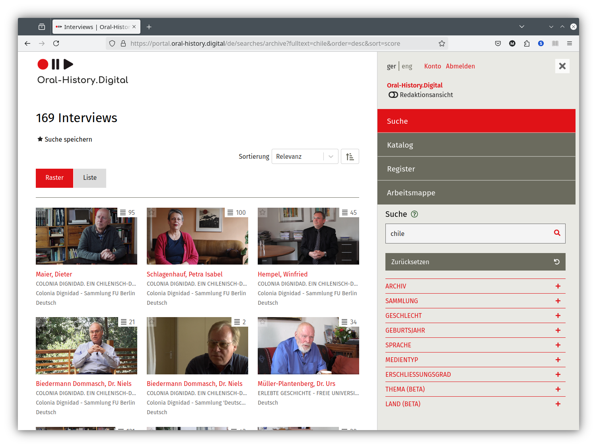
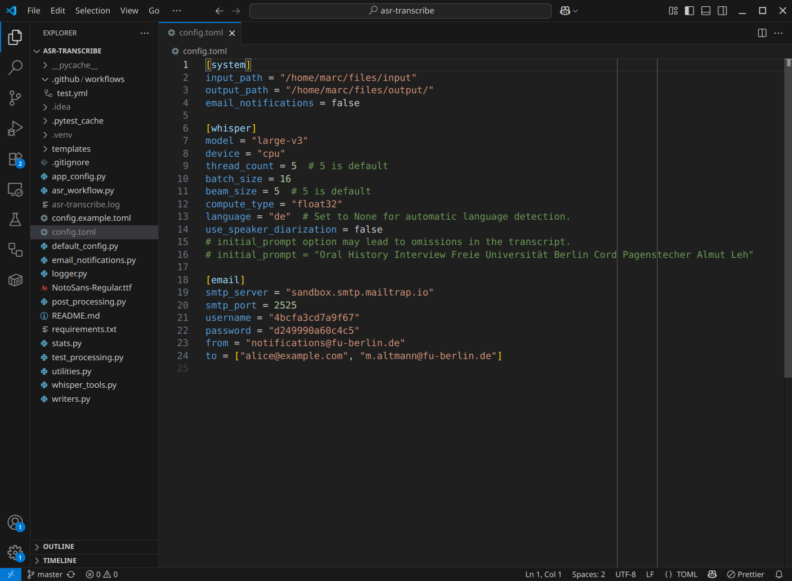
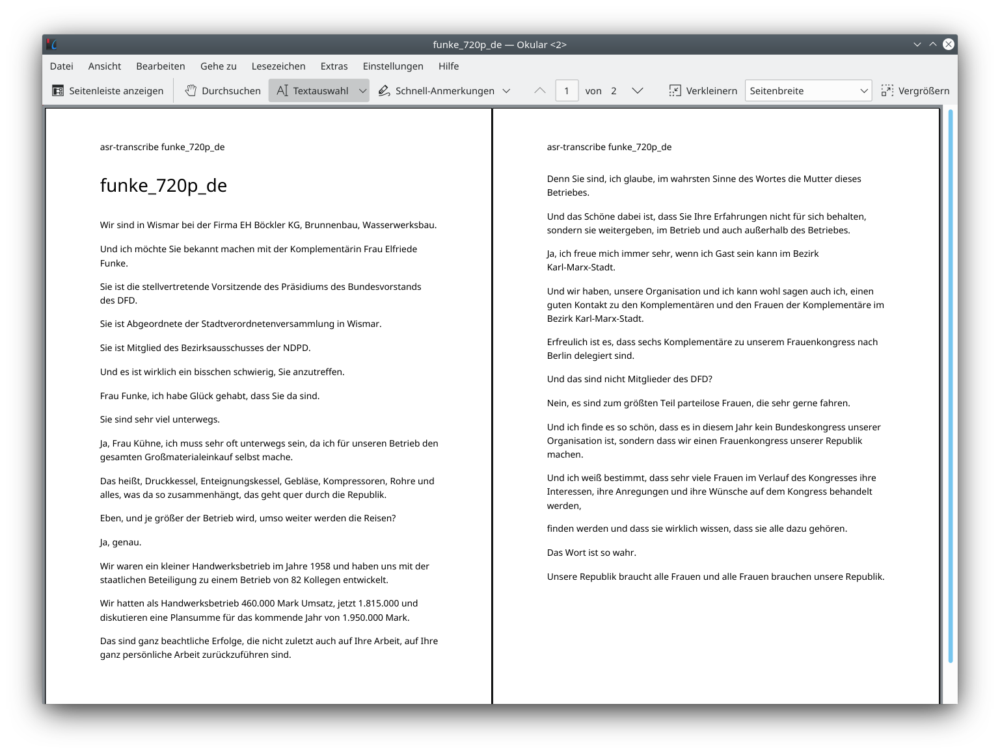

class: center, middle # The ASR4Memory Project ## Oral History Archives & Automatic Speech Recognition <img src="asr4memory-logo.jpg" width="15%" alt="ASR4Memory logo"> --- # Workshop Content 1. ASR4Memory project overview, results and next steps _(Marc)_ 2. Fine-tuning _(Peter)_ 1. Dataset preparation and anonymization with LLMs 2. Training via hyperparamter optimization 3. Evaluation with LLMs --- class: center, middle # Project Overview ## Building an ASR infrastructure / pipeline --- # Project Overview ASR4Memory ## Overview - Project Duration: January to December 2024 - Funding: NFDI4Memory, Incubator Funds - Team Members: [Peter Kompiel][1], [Marc Altmann][2], [Tobias Kilgus][3] (FU Berlin), Christian Horvat (Department of Mathematics, FHNW) - Implementation: University Library of FU, Department: - Research and Publication Services, Team: Digital Interview Collections ## Links - Website: <https://www.fu-berlin.de/asr4memory> - GitHub: <https://github.com/asr4memory> --- # Initial Situation - Oral History.Digital – platform for oral history interviews - Over 40 archives with 4,000 interviews (video/audio) - Most of the archives from other institutions - Many interviews around 4h length - <https://portal.oral-history.digital/de> --- --- ---  --- --- # Initial Situation - Large collections of historical audiovisual resources need to be made accessible and searchable: - Transcription is key! --- --- --- # Initial Situation - Large collections of historical audiovisual resources need to be made accessible and searchable: - Transcription is key! - So far, transcription of AV resources has been done via: - Manual transcription → very time-consuming and costly - Commercial transcription services - Poor data protection (cloud services) and high costs - Mediocre transcription quality, few export formats --- # OpenAI Whisper .right[] - Automatic speech recognition with high accuracy - Multilingual - Robust (accents, background noise, speech patterns...) - Open-source model - Using Whisper for our own transcriptions since ~2 years --- # Project goals of ASR4Memory - Evaluate Whisper and compare Whisper variants - Especially WhisperX - Build a transcription pipeline for our own use cases and with special post-processing - Start work on a web transcription service, including an online transcript editor - Try to fine-tune the Whisper model with data from our oral history interviews - Open-source all the code: <https://github.com/asr4memory> --- --- # Results - Semi-automatic transcription service with WhisperX on our university servers - Gained knowledge on pre-processing and configuration - Started development of a web service - Started fine-tuning of the Whisper model - Identified further applications and challenges, e.g. named entity recognition, anonymization --- class: center, middle # Software ## asr-transcribe ---  --- --- ---  --- class: center, middle # Software ## mmt-py --- --- --- --- class: center, middle # Software ## NER tool prototype --- --- # Weaknesses of ASR - Hallucinations: - Generation of non-speech content, originating from the training data - Entity recognition: - Misrecognition of (historical/current) personal names, places, events - Speaker diarization -> issues with: - rapid speaker changes - parallel speech - many speakers - Smoothing of the transcript -> frequently omitted: - Filler words - Repetitions, sentence breaks, delays - Non-verbal communication, pauses, direct speech - Dialects and accents are transformed into high German. - ASR results - not a verbatim transcription - more like a “basic research transcript” (Fuß/Karbach 2019) --- # Next Steps - Gradual integration of ASR functionality in OH.D - Start of the pilot phase for ASR use by OH.D archives - Improved correction functions for transcripts in OH.D - Automatic import of transcripts into OH.D archives - Further development of the transcription pipeline - Expansion of hardware, e.g. additional GPUs - Enable further export formats such as TEI or IIIF - Reduce smoothing and hallucinations - Improve speaker markup - Fine-tuning of the ASR models - Training with oral history interviews on HPC Cluster(s) - Goal: development of a domain-specific ASR model - Use case: 90 interviews on the history of the Freie Universität Berlin [1]: https://www.cedis.fu-berlin.de/cedis/mitarbeiter/beschaeftigte/pkompiel.html [2]: https://www.fu-berlin.de/sites/ub/ueber-uns/team/altmann/index.html [3]: https://www.fu-berlin.de/sites/ub/ueber-uns/team/kilgus/index.html